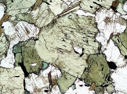

Solange Mohammed
Books aid in making me feel grounded thus, i am a major bookworm. I really enjoy contemporaries and literary fiction.
Besides reading, i like watching anime and my current favourite is One piece which i started and finished during the summer vacation.
Decided on attend UWI, Mona due to thier Geology program because of my passion for the subject and its principles.
I am from Trinidad and there isnt a program at UWI Sta. I'm also doing computing due to it being a great accessory for most job options and my curiosity about the principles.
I decided on the course web development for a multitude of reasons.The curiosity of creating something as
cool as a webpage and the utter joy of seeing your creation staring back at you. Also, everything that this course entails would aid in my further understanding
of other computing courses i.e Net-centric computing.
